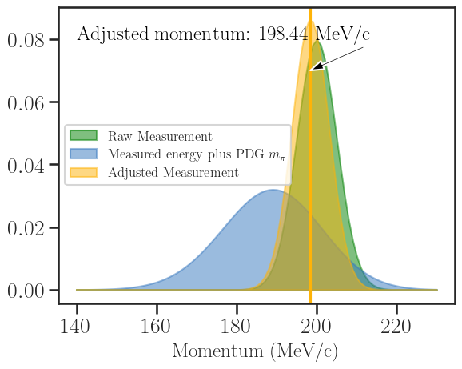
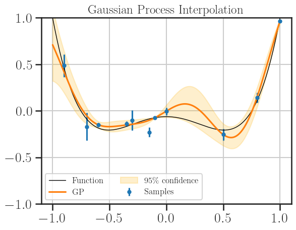

Baryons 2022 - notes
Contents
Baryons 2022 - notes#
Notebook for creating plots and pictures to accompany the talk for the conference.
# Common imports
import numpy as np
%matplotlib inline
import matplotlib.pyplot as plt
import seaborn as sns
import pandas as pd
from matplotlib.collections import PatchCollection
from matplotlib.patches import Rectangle
from matplotlib.ticker import FuncFormatter, MaxNLocator
# For plotting styles...
sns.set_style("ticks")
sns.set_context("talk")
#sns.axes_style()
label_size = 20
plt.rcParams['axes.labelsize'] = label_size
#plt.rcParams['ylabel.size'] = label_size
#print(plt.rcParams.keys())
legend_size = 20
ticklabel_size = 20
plt.rcParams['xtick.labelsize'] = ticklabel_size
plt.rcParams['ytick.labelsize'] = ticklabel_size
# for PPNP consistency...
plt.rcParams['font.family'] = 'DejaVu Serif'
Baryon Spectrum#
Use the plot code from the PPNP article
# Read in PDG data...
nstar_1996_df = pd.read_csv('PDG1996_Nstar.csv',header=None,names=['resonance','jp','rating','mass','width'])
nstar_2022_df = pd.read_csv('PDG2022_Nstar.csv',header=None,names=['resonance','jp','rating','mass','width'])
delta_1996_df = pd.read_csv('PDG1996_Delta.csv',header=None,names=['resonance','jp','rating','mass','width'])
delta_2022_df = pd.read_csv('PDG2022_Delta.csv',header=None,names=['resonance','jp','rating','mass','width'])
# Collect DFs in array...
df_array = [nstar_1996_df, nstar_2022_df, delta_1996_df, delta_2022_df]
# Convert spin-parity to x-axis position...
def jp_to_x(str):
j,p = str.split('/')
if p[-1] == u'-' or p[-1] == chr(8722):
pad = 18.0
else:
pad = 0.0
return float(j)+pad
# Apply to all DFs...
for df in df_array:
df['x_pos'] = df['jp'].apply(jp_to_x)
rating_arr = ['*','**','***','****']
nstar_count_1996 = []
nstar_count_2022 = []
for r in rating_arr:
nstar_count_1996.append(sum(nstar_1996_df['rating']==r))
nstar_count_2022.append(sum(nstar_2022_df['rating']==r))
nstar_rating_df = pd.DataFrame(zip(nstar_count_1996,nstar_count_2022),columns=['1996','2022'],index=rating_arr)
nstar_rating_df.plot.bar(color={"1996": "xkcd:amber", "2022": "xkcd:windows blue"})
plt.grid(True)
plt.ylim(0,16)
plt.title(r'PDG N$^{\ast}$ Resonances by Year')
plt.savefig('figures/nstar_resonances_year.svg', bbox_inches='tight')
plt.show()

delta_count_1996 = []
delta_count_2022 = []
for r in rating_arr:
delta_count_1996.append(sum(delta_1996_df['rating']==r))
delta_count_2022.append(sum(delta_2022_df['rating']==r))
delta_rating_df = pd.DataFrame(zip(delta_count_1996,delta_count_2022),columns=['1996','2022'],index=rating_arr)
delta_rating_df.plot.bar(color={"1996": "xkcd:amber", "2022": "xkcd:windows blue"})
plt.grid(True)
plt.title(r'PDG $\Delta$ Resonances by Year')
plt.savefig('figures/delta_resonances_year.svg', bbox_inches='tight')
plt.show()

# Taken from somewhere else; can't recall!
# Create boxes in teh correct places for plotting on spectrum
def make_rerror_boxes(ax, df, xoff=0.0, facecolor='xkcd:windows blue',
edgecolor='None', alpha=0.3):
# Get calues from DataFrame...
xdata = np.array(df['x_pos'].values)
ydata = np.array(df['mass'].values)
xerror = 0.4*np.ones((2,len(xdata)))
widths = np.array(df['width'].values)
yerror = 0.5*np.array([widths,widths])
stars = df['rating'].values
# set array of alpha values...
alphas = []
for s in stars:
if s=='*':
alphas.append(0.1)
elif s=='**':
alphas.append(0.4)
elif s=='***':
alphas.append(0.7)
else:
alphas.append(1.0)
# Create list for all the error patches
errorboxes = []
# Loop over data points; create box from errors at each point
for x, y, xe, ye, a in zip(xdata, ydata, xerror.T, yerror.T, alphas):
rect = Rectangle((xoff + x - xe[0], y - ye[0]), xe.sum(), ye.sum(), fc=facecolor, alpha=a)
ax.add_patch(rect)
# Plot errorbars
artists = ax.errorbar(np.array(xdata)+xoff, ydata, xerr=xerror, fmt='None', ecolor='k')
return artists
# Create figure and axes
plt.rc('text', usetex=True)
plt.rc('font', family='serif')
def make_spectrum_plot(df1,df2,title,savefile=None):
fig, ax = plt.subplots(1,figsize=(12,8))
plt.rc('text', usetex=True)
plt.rc('font', family='serif')
# Call function to create error boxes
_ = make_rerror_boxes(ax, df1, -0.4, r'xkcd:amber')
_ = make_rerror_boxes(ax, df2, 0.4)
labels = [ r'$\frac{1}{2}^{+}$',
r'$\frac{3}{2}^{+}$',
r'$\frac{5}{2}^{+}$',
r'$\frac{7}{2}^{+}$',
r'$\frac{9}{2}^{+}$',
r'$\frac{11}{2}^{+}$',
r'$\frac{13}{2}^{+}$',
r'$\frac{15}{2}^{+}$',
'',
r'$\frac{1}{2}^{-}$',
r'$\frac{3}{2}^{-}$',
r'$\frac{5}{2}^{-}$',
r'$\frac{7}{2}^{-}$',
r'$\frac{9}{2}^{-}$',
r'$\frac{11}{2}^{-}$',
r'$\frac{13}{2}^{-}$']
locs = np.arange(1,33,2)
ax.set_xlim((-0.5,32.5))
ax.set_xlabel('Spin-Parity')
ax.set_ylim((800,3100))
ax.set_ylabel(r'Mass (MeV/c$^2$)')
plt.title(title,fontsize=30)
plt.xticks(locs, labels)
plt.plot([17,17], [800,3100], 'k--')
# Create a Rectangle patch
boxes = []
boxes.append(Rectangle((11,1200),0.8,80,linewidth=1,edgecolor='none',facecolor='xkcd:amber',alpha=1.0))
boxes.append(Rectangle((18,1200),0.8,80,linewidth=1,edgecolor='none',facecolor='xkcd:windows blue',alpha=1.0))
boxes.append(Rectangle((11,1100),0.8,80,linewidth=1,edgecolor='none',facecolor='xkcd:amber',alpha=0.7))
boxes.append(Rectangle((18,1100),0.8,80,linewidth=1,edgecolor='none',facecolor='xkcd:windows blue',alpha=0.7))
boxes.append(Rectangle((11,1000),0.8,80,linewidth=1,edgecolor='none',facecolor='xkcd:amber',alpha=0.4))
boxes.append(Rectangle((18,1000),0.8,80,linewidth=1,edgecolor='none',facecolor='xkcd:windows blue',alpha=0.4))
boxes.append(Rectangle((11,900),0.8,80,linewidth=1,edgecolor='none',facecolor='xkcd:amber',alpha=0.1))
boxes.append(Rectangle((18,900),0.8,80,linewidth=1,edgecolor='none',facecolor='xkcd:windows blue',alpha=0.1))
# Add the patch to the Axes
for b in boxes:
ax.add_patch(b)
plt.text(12, 1210, '**** 1996', fontsize=16)
plt.text(19, 1210, '**** 2022', fontsize=16)
plt.text(12, 1110, '***', fontsize=16)
plt.text(19, 1110, '***', fontsize=16)
plt.text(12, 1010, '**', fontsize=16)
plt.text(19, 1010, '**', fontsize=16)
plt.text(12, 910, '*', fontsize=16)
plt.text(19, 910, '*', fontsize=16)
if savefile:
plt.savefig(savefile, bbox_inches='tight')
plt.show()
return
make_spectrum_plot(df1=nstar_1996_df,df2=nstar_2022_df,title=r'N$^{\ast}$ Resonances',savefile='figures/nstar_spectrum_year.svg')

make_spectrum_plot(df1=delta_1996_df,df2=delta_2022_df,title=r'$\Delta^{\ast}$ Resonances',savefile='figures/delta_spectrum_year.svg')

Kinematic Fit Demo#
This is based on plots that were constructed for the 2017(!) NSTAR conference. The kinematics are adjusted to illustrate a clear pion case.
# Set mean values for the measured quantities, calculate measured mass...
# Measured momentum...
p_m = 200.0
sig_p_m = 5.0
# Measured energy...
e_m = 235.0
sig_e_m = 10.0
# Mass calculated from measurements...
m_m = np.sqrt(e_m**2 - p_m**2)
sig_m_m = np.sqrt(((e_m**2 * sig_e_m**2) + (p_m**2 * sig_p_m**2))/(m_m**2))
print(f'Calculated mass: {m_m:.3f} MeV/c^2')
print(f'Uncertainty: {sig_m_m:.3f} MeV/c^2')
Calculated mass: 123.390 MeV/c^2
Uncertainty: 20.698 MeV/c^2
from scipy.stats import norm
def prob_e(p,m,e_0,sig_e_0):
e = np.sqrt(p**2 + m**2)
return norm.pdf(e,e_0,sig_e_0)
def prob_p(p,m,e_0,sig_e_0):
e = np.sqrt(p**2 + m**2)
return norm.pdf(e,e_0,sig_e_0)
range_p = np.linspace(0, 300, 100)
range_m = np.linspace(0, 300, 100)
X,Y = np.meshgrid(range_p, range_m)
Z = prob_e(X, Y,e_m,sig_e_m).T
fig = plt.figure(figsize=(8,8))
im = plt.imshow(Z, cmap=plt.cm.Blues, vmin=0, vmax=abs(Z).max(), extent=[0, 500, 0, 500], origin='lower')
im.set_interpolation('bilinear')
plt.title(f'Values of mass and momentum given $E_m$ = {e_m:.2f} MeV')
plt.xlabel(r'Momentum [MeV/c]')
plt.ylabel(r'Mass [MeV/c$^2$]')
plt.savefig('figures/kinfit_e_p.svg', bbox_inches='tight')
plt.show()
Z2 = norm.pdf(X,p_m,sig_p_m)
Z3 = norm.pdf(Y,m_m,sig_m_m)
fig = plt.figure(figsize=(8,8))
im = plt.imshow(Z, cmap=plt.cm.Blues, vmin=0, vmax=abs(Z).max(),
extent=[0, 300, 0, 300], origin='lower')
im.set_interpolation('bilinear')
im2 = plt.imshow(Z2, cmap=plt.cm.Greens, vmin=0, vmax=abs(Z).max(), alpha=0.7,
extent=[0, 300, 0, 300], origin='lower')
im2.set_interpolation('bilinear')
# im3 = plt.imshow(Z3, cmap=plt.cm.Reds, vmin=0, vmax=abs(Z).max(), alpha=0.5,
# extent=[0, 300, 0, 300], origin='lower')
# im3.set_interpolation('bilinear')
plt.title(f'Independent measurement of momentum $p_m$ = {p_m:.2f} MeV/c')
plt.xlabel(r'Momentum [MeV/c]')
plt.ylabel(r'Mass [MeV/c$^2$]')
plt.savefig('figures/kinfit_e_p_p.svg', bbox_inches='tight')
plt.show()

m_upper = (m_m + sig_m_m)*np.ones(range_p.shape)
m_lower = (m_m - sig_m_m)*np.ones(range_p.shape)
m_pion_pdg = 139.57
fig, ax = plt.subplots(1,figsize=(8,8))
im = plt.imshow(Z, cmap=plt.cm.Blues, vmin=0, vmax=abs(Z).max(),
extent=[0, 300, 0, 300], origin='lower')
im.set_interpolation('bilinear')
im2 = plt.imshow(Z2, cmap=plt.cm.Greens, vmin=0, vmax=abs(Z).max(), alpha=0.5,
extent=[0, 300, 0, 300], origin='lower')
im2.set_interpolation('bilinear')
# im3 = plt.imshow(Z3, cmap=plt.cm.Reds, vmin=0, vmax=abs(Z).max(), alpha=0.7,
# extent=[0, 300, 0, 300], origin='lower')
# im3.set_interpolation('bilinear')
plt.fill_between(range_p, m_upper, m_lower, alpha=0.2, color='xkcd:amber')
ax.axhline(m_m,color='xkcd:amber')
ax.axhline(m_pion_pdg,color='k')
ax.annotate(f'Inferred mass: {m_m:.2f} MeV/c$^2$',
xy=(100, m_m),
xytext=(10, 70),
#fontsize='large',
color='k',
arrowprops=dict(facecolor='k',width=2,headwidth=8))
ax.annotate(f'PDG $\pi^+$ mass: {m_pion_pdg: .2f} Mev/c$^2$',
xy=(170, m_pion_pdg),
xytext=(10, 170),
#fontsize='large',
color='k',
arrowprops=dict(facecolor='k',width=2,headwidth=8))
plt.xlabel(r'Momentum [MeV/c]')
plt.ylabel(r'Mass [MeV/c$^2$]')
plt.savefig('figures/kinfit_e_p_m.svg', bbox_inches='tight')
plt.show()

# Set up the probability distributions
x = np.linspace(140,230, 91)
y_zero = np.zeros(x.shape)
p1 = norm.pdf(x,loc=p_m,scale=sig_p_m)
p2 = prob_p(x,m_pion_pdg,e_m,sig_e_m)
p2 /= p2.sum()
p3 = p1*p2
p3 /= p3.sum()
# Calculate adjusted values
def weighted_avg_and_std(values, weights):
"""
Return the weighted average and standard deviation.
values, weights -- Numpy ndarrays with the same shape.
"""
average = np.average(values, weights=weights)
# Fast and numerically precise:
variance = np.average((values-average)**2, weights=weights)
return (average, np.sqrt(variance))
p_adjusted, sig_p_adjusted = weighted_avg_and_std(x,p3)
e_adjusted = np.sqrt(m_pion_pdg**2 + p_adjusted**2)
sig_e_adjusted = (p_adjusted * sig_p_adjusted)/(e_adjusted)
fig, ax = plt.subplots(1, 1)
#ax.plot(x, p1, color='g')
ax.fill_between(x,p1,y_zero,color='g',alpha=0.5,label='Raw Measurement')
ax.fill_between(x,p2,y_zero,color='xkcd:windows blue',alpha=0.5,label=r'Measured energy plus PDG $m_{\pi}$')
ax.fill_between(x,p3,y_zero,color='xkcd:amber',alpha=0.5,label='Adjusted Measurement')
ax.axvline(p_adjusted,color='xkcd:amber')
ax.annotate(f'Adjusted momentum: {p_adjusted: .2f} MeV/c',
xy=(p_adjusted, 0.07),
xytext=(140, 0.08),
#fontsize='large',
color='k',
arrowprops=dict(facecolor='k',width=2,headwidth=8))
ax.set_xlabel('Momentum (MeV/c)')
plt.legend(fontsize=12,loc='center left')
plt.savefig('figures/kinfit_momentum_1d.svg', bbox_inches='tight')
plt.show()

x = np.linspace(200,260, 121)
y_zero = np.zeros(x.shape)
p1 = norm.pdf(x,loc=e_m,scale=sig_e_m)
p2 = norm.pdf(x,loc=e_adjusted,scale=sig_e_adjusted)
fig, ax = plt.subplots(1, 1)
ax.fill_between(x,p1,y_zero,color='xkcd:windows blue',alpha=0.5, label='Raw Measurement')
ax.fill_between(x,p2,y_zero,color='xkcd:amber',alpha=0.5, label='Adjusted Measurement')
ax.axvline(e_adjusted,color='xkcd:amber')
ax.annotate(f'Adjusted energy: {e_adjusted: .2f} MeV',
xy=(e_adjusted, 0.09),
xytext=(200, 0.1),
#fontsize='large',
color='k',
arrowprops=dict(facecolor='k',width=2,headwidth=8))
ax.set_xlabel('Energy (MeV)')
plt.legend(fontsize=12,loc='center left')
plt.savefig('figures/kinfit_energy_1d.svg', bbox_inches='tight')
plt.show()

# Our funky function here
from scipy.special import legendre
def fn(xs):
P2 = legendre(2)
P4 = legendre(4)
return 0.5*P2(xs) + 0.5*P4(xs)
x_fine = np.linspace(-1, 1, 200)
y_fine = fn(x_fine)
xs2 = np.array([-0.9, -0.7, -0.6, -0.35, -0.3, -0.15, -0.1, 0.0, 0.5, 0.8, 1.0])
ys2 = fn(xs2)
err_scale = np.random.uniform(low=0.03, high=0.1, size=ys2.shape)
sys_err = np.random.normal(loc=0, scale=err_scale, size=ys2.shape)
err = 0.5*np.random.gamma(2.0, err_scale, size=ys2.shape)
ys_err = ys2 + sys_err
my_dict = {'x':xs2, 'y_true':ys2, 'err_scale':err_scale, 'sys_err':sys_err, 'err':err, 'ys_err':ys_err}
my_df = pd.DataFrame(my_dict)
#print(my_df)
plt.title('Generate Pseudodata')
plt.errorbar(xs2, ys_err, yerr=err, fmt="o", label="Samples", markersize=5)
plt.plot(x_fine, y_fine, label="Function", color="k", lw=1)
plt.ylim(-1.0, 1.0), plt.legend(ncol=2, fontsize=12);
plt.grid(True)
plt.savefig('figures/gen_pseudodata.svg', bbox_inches='tight')

from sklearn.gaussian_process import GaussianProcessRegressor
import sklearn.gaussian_process.kernels as k
from sklearn.gaussian_process.kernels import RBF, ConstantKernel as C
#kernel = k.RBF(length_scale=0.1, length_scale_bounds=(0.01, 2.0))
gp = GaussianProcessRegressor(kernel=RBF(length_scale=0.5, length_scale_bounds=(0.35, 2.0)),alpha=err**2)
gp.fit(np.atleast_2d(xs2).T, ys_err)
y_pred, sigma = gp.predict(np.atleast_2d(x_fine).T, return_std=True)
# 1.96sigma = 95% confidence interval for a normal distribution
upper, lower = y_pred + 1.96 * sigma, y_pred - 1.96 * sigma
plt.title('Gaussian Process Interpolation')
plt.errorbar(xs2, ys_err, yerr=err, fmt="o", label="Samples", markersize=5)
plt.plot(x_fine, y_fine, label="Function", color="k", lw=1)
plt.plot(x_fine, y_pred, label="GP", ls="-")
#plt.fill_between(x_fine, upper, lower, alpha=0.2, label="95% confidence", color="#2698eb")
plt.fill_between(x_fine, upper, lower, alpha=0.2, label="95\% confidence", color="xkcd:amber")
plt.ylim(-1.0, 1.0), plt.legend(ncol=2, fontsize=12);
plt.grid(True)
plt.savefig('figures/gp_interpolation.svg', bbox_inches='tight')
#print(f"RBF, length_scale={gp.kernel_.length_scale:0.3f}")

Post Baryons Conference Additions#
# Read in table of thresholds...
thresholds_df = pd.read_csv('Reaction_Thresholds.csv',header=0,names=['Reaction','E_gamma','W'])
#Sort by threshold energy...
thresholds_df = thresholds_df.sort_values(by=['W'])
# Add column to indicate target
def reaction_target(str):
if str.find('gamma p') !=-1:
target = 'proton'
else:
target = 'neutron'
return target
thresholds_df['Target'] = thresholds_df['Reaction'].apply(reaction_target)
#print(thresholds_df[thresholds_df['Target']=='proton'])
# Proton channels
names_p = thresholds_df[thresholds_df['Target']=='proton']['Reaction'].values
w_thr_p = thresholds_df[thresholds_df['Target']=='proton']['W'].values
# Choose some nice levels
levels_p = np.tile([1, -1, 3, -3, 5, -5, 7, -7, 9, -9],
int(np.ceil(len(w_thr_p)/10)))[:len(w_thr_p)]
# Neutron channels
names_n = thresholds_df[thresholds_df['Target']=='neutron']['Reaction'].values
w_thr_n = thresholds_df[thresholds_df['Target']=='neutron']['W'].values
# Choose some nice levels
levels_n = np.tile([7, -7, 9, -9, 11, -11, 13, -13, 15, -15],
int(np.ceil(len(w_thr_n)/10)))[:len(w_thr_n)]
# Create figure and plot a stem plot with the date
fig, ax = plt.subplots(figsize=(8.8, 6), constrained_layout=True)
plt.title("Meson Photoproduction Thresholds",fontsize=30, y=1.2)
ax.vlines(w_thr_n, 0, levels_n, color="tab:blue") # The vertical stems.
ax.plot(w_thr_n, np.zeros_like(w_thr_n), "-o",
color="k", markerfacecolor="w") # Baseline and markers on it.
# annotate lines
for d, l, r in zip(w_thr_p, levels_p, names_p):
ax.annotate(r, xy=(d, l),
xytext=(-3, np.sign(l)*3), textcoords="offset points",
horizontalalignment="center",
verticalalignment="bottom" if l > 0 else "top")
ax.vlines(w_thr_p, 0, levels_p, color="tab:red") # The vertical stems.
ax.plot(w_thr_p, np.zeros_like(w_thr_p), "-o",
color="k", markerfacecolor="w") # Baseline and markers on it.
# annotate lines
for d, l, r in zip(w_thr_n, levels_n, names_n):
ax.annotate(r, xy=(d, l),
xytext=(-3, np.sign(l)*3), textcoords="offset points",
horizontalalignment="center",
verticalalignment="bottom" if l > 0 else "top")
# remove y axis and spines
ax.yaxis.set_visible(False)
ax.spines[["left", "top", "right"]].set_visible(False)
ax.set_xlabel('$W$ [MeV]')
mp = 938.272
def eg2w(x):
return np.sqrt(mp*(mp + 2.0*x))
def w2eg(x):
return (x*x - mp*mp)/(2.0*mp)
secax = ax.secondary_xaxis('top', functions=(w2eg, eg2w))
secax.set_xlabel('$E_{\gamma}$ [MeV]')
ax.margins(y=0.1)
plt.savefig('figures/thresholds.svg', bbox_inches='tight')
plt.show()

Last updated: 2022-12-30T12:17:49.880839+00:00
Python implementation: CPython
Python version : 3.8.15
IPython version : 8.7.0
Compiler : GCC 11.3.0
OS : Linux
Release : 5.15.0-1024-azure
Machine : x86_64
Processor : x86_64
CPU cores : 2
Architecture: 64bit
numpy : 1.24.1
pandas : 1.5.2
matplotlib: 3.6.2
seaborn : 0.12.1
sklearn : 1.2.0